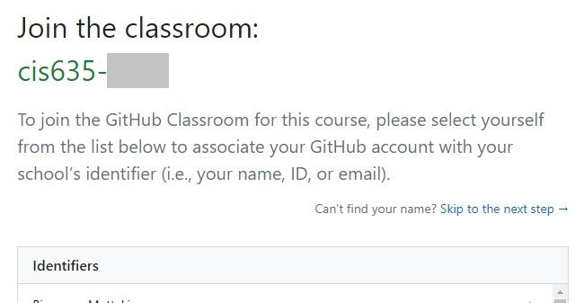
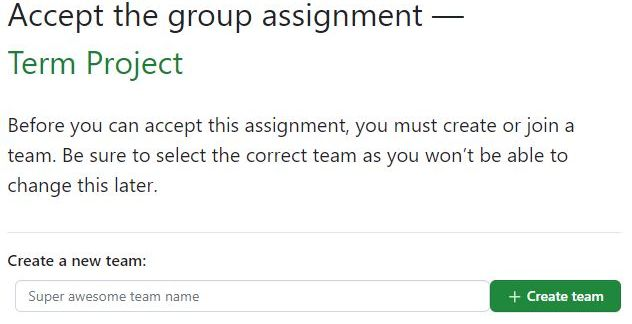

Project Overview#
In this data mining project, you’ll pick an application area and set up a data mining pipeline for a specific problem in that area.
Problem Statement#
One main goal of this course is to help you learn how to plan, make, and check a data mining pipeline from the start to the end. You will propose, create, and finish a data mining project in an area you like. You’ll be guided through some assignments:
Project Proposal
Project Progress Report
Project Final Report
Objectives#
By the end of this project, you should be able to:
Build and run a full data mining pipeline.
Plan a data mining project and do background research.
Get better at using data mining methods and tools.
Clearly explain your methods and results.
Grading#
Your final project will count for 30% of your grade in this course:
Note: You cannot use your homework extensions on project components.
All components of your final project are subject to GVSU and the School of Computing’s academic honesty policies. Violations of these policies on your final project will likely result in failure from the course.
Groups#
This project is team-based. You will need to set up your team, with each team allowed to have up to 4 members.
Preparation#
For the term project, we will use GitHub to manage the project’s source files.
Create a GitHub account if you don’t have one.
Accept your instructor’s GitHub project invitation to set up your project repository.
Select Your Name: 
Team Setup:
If your team does not exist yet, create a new team.
If it already exists, join your existing team. 
Initialize Your Project Repository:
Push your Colab notebook to GitHub: Colab to GitHub
Project Schedule#
Week |
Task |
|---|---|
Week 6, 7, 8 |
Project proposal due (Friday, 02/28) |
Week 9, 10, 11, 12 |
Progress report due (Monday, 03/24) |
Week 13, 14, 15 |
Final report due (Friday, 04/18) |
Possible project ideas#
Although we have not covered all the topics in this course, However, we have overviewed broad categories of data mining tasks. My advice is to start by choosing a domain that is interesting to you and a type of data mining task that you think is applicable (and that you are interested in learning more about). You will then need to do your own research on the specifics.
Some example types of projects (your project does not need to fall under any of these categories)::
Solve a Problem: Make a data mining plan for a problem you care about. Test your plan against another one.
Try a Study: Find a study you like and try some of it yourself. You need to make your own plan, not just use the old one.
Research a Question: Think of a question and make a data mining plan to find the answer.
Analysis: Make or find a data mining plan for a task and see how well it works. You can change parts of the plan to make it better.
Dataset Options for Your Project#
You have the flexibility to choose any public dataset that aligns with the goals of your project. Here are some suggested datasets based on various project themes: Datasets.
If you have any questions or need guidance on selecting the right dataset, feel free to bring your ideas to office hours for further discussion and personalized feedback!